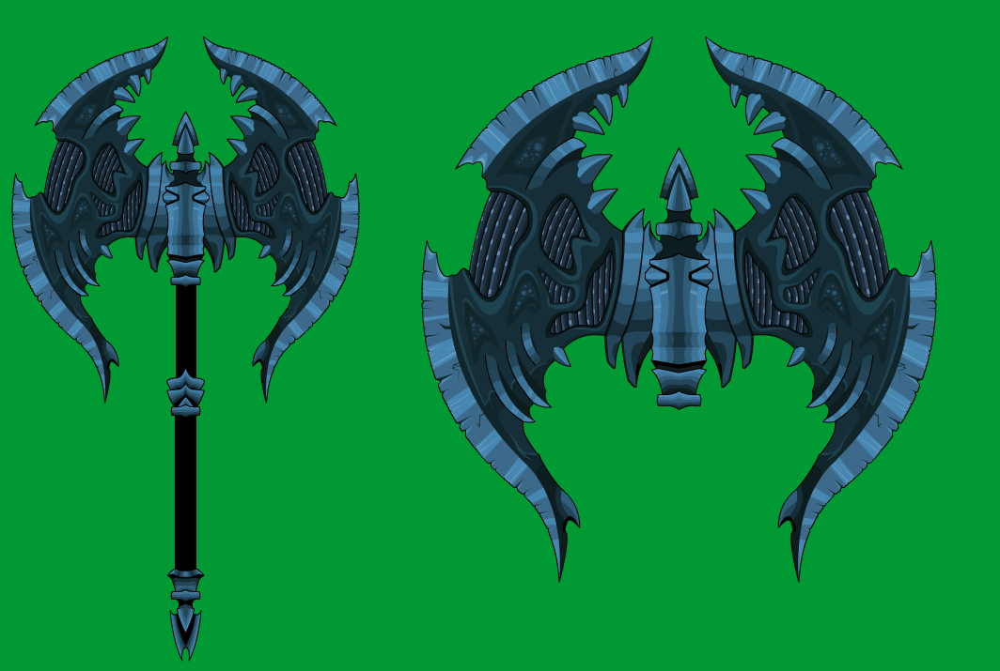
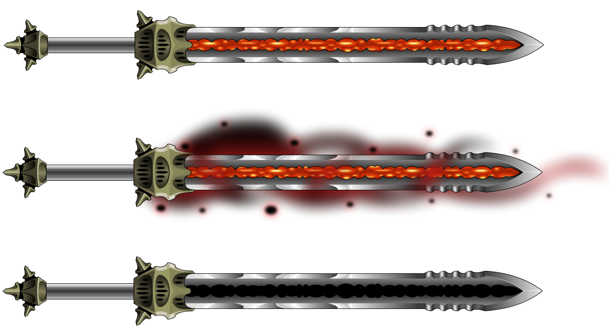

Skitser
Dette er et udkast af mine skitser.
Jeg er stor fan af fantasi, og det at fantasien sætter grænserne, hvilket ikke holder mig tilbage fra underlige proportioner på våben, karakterer og monstre.
Hvis jeg har et papir og noget at tegne med, om det er kuglepen eller en blyant, så tegner jeg, og har det godt.
Det meste af min inspiration kommer fra en kunstner fra MMORPG'et 'Adventure Quest Worlds' som går under navnet
"Dage The Evil" eller "Steven G", som er et 2D spil som har kørt i +12 år.
Da meget af min kunst er fantasi og overdrevende proportioner, kommer der nogle eksempler på mit skitseværk her.

Digitale Skitser
For de fleste af mine skitser der starter direkte på computeren, starter tit ud med et baggrundsbillede, eller en karakter, som bliver placeret for inspiration.
Inspirationen kan være for hele karakterer, enkelte farver, en lille detalje, alt er en mulighed.
Billedet nedenunder er starten på en original karakter, med basis-karakteren for "Adventure Quest Worlds", og arbejder derefter omkring den model.
Karakteren er selvfølgelig ikke færdig, men dette er et godt eksempel på hvordan arbejdet ser ud undervejs.

Færdige Produkter
Dette er så 2 eksempler på færdige produkter.
Disse projekter har henholdsvist taget 9 timer og 4 timer, men det er ikke unormalt at have projekter der tager op til flere dage, både med at finde designidéer, og at tjekke om tingene så passer sammen i designfasen.
Der forekommer også tit designændringer undervejs, da der bliver skabt nye idéer, som giver flere muligheder for et federe slutresultat.
Dette er udelukkende få eksempler.
 